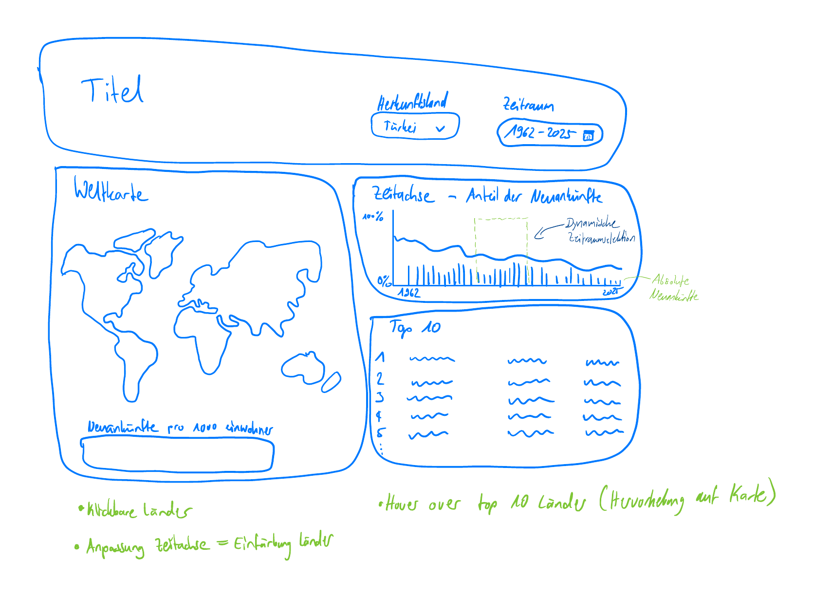

Projekt I.DAVI · HSLU · 2026
Nachbarländer als Hauptaufnahmeländer?
Neuankünfte von Geflüchteten 1962–2025
Nehmen Nachbarländer bei grossen Fluchtbewegungen im Verhältnis zu ihrer Bevölkerung mehr Geflüchtete auf als weiter entfernte Länder, und wie hat sich das seit 1962 verändert?
Wer vor Krieg oder Verfolgung flieht, kommt oft zuerst im Nachbarland an. Diese Visualisierung zeigt mit Daten des UNHCR, wo Menschen seit 1962 neu angekommen sind, gemessen an der Bevölkerung des Aufnahmelands, und wie sich der Anteil der Nachbarländer über die Jahrzehnte entwickelt hat.
Zur VisualisierungVisualisierung
- Überblick: Die Karte zeigt, wie viele Menschen jedes Land aus seinen Nachbarländern aufgenommen hat, pro 1000 Einwohner.
- Zeitraum wählen: Auf der Zeitachse mit der Maus einen Bereich aufziehen. Die Karte zeigt dann nur diese Jahre.
- Herkunftsland wählen: Auf ein Land in der Karte klicken oder es im Menü auswählen. Karte und Zeitachse zeigen dann nur Menschen aus diesem Land.
- Hypothese prüfen: Ist ein Herkunftsland gewählt, zeigt der Kasten über der Karte, ob unsere Hypothese für dieses Land und den gewählten Zeitraum zutrifft.
- Details: Mit der Maus über ein Land oder ein Jahr fahren. «Zurücksetzen» stellt den Start wieder her.
Summe der Neuankünfte im gewählten Zeitraum ÷ durchschnittliche Bevölkerung des Aufnahmelands × 1000. Klick auf ein Land wählt es als Herkunftsland.
Daten werden geladen …
Mit der Maus einen Zeitraum aufziehen, um die Karte darauf zu filtern. Klick ausserhalb der Auswahl = ganzer Zeitraum.
Quellen: UNHCR Forced Displacement Flows (Stand 11.6.2026), Weltbank «Population, total», GeoDataSource Country Borders, world-atlas (Natural Earth); eigene Berechnungen. Details im Abschnitt Daten.
Kontext zu grossen Fluchtbewegungen
Die zehn Herkunftsländer mit den meisten Neuankünften in einem einzelnen Jahr. «anzeigen» stellt Land und Zeitraum in Karte und Zeitachse ein.
| Herkunftsland | Zeitraum | Kontext | Neuankünfte | davon in Nachbarländern | Aktion |
|---|
Hintergrund
In den Nachrichten wird über Flucht oft aus europäischer Sicht berichtet. Laut UNHCR leben aber rund zwei Drittel aller Geflüchteten in einem Nachbarland ihres Herkunftslands. Umfragen zeigen zudem, dass viele Menschen falsch einschätzen, welche Länder die meisten Geflüchteten aufnehmen. Uns interessiert deshalb, wo Geflüchtete tatsächlich ankommen, wie stark diese Länder im Verhältnis zu ihrer Bevölkerung betroffen sind und ob sich das seit 1962 verändert hat.
Hypothese
Nachbarländer nehmen pro Einwohner am meisten auf. Ihr Anteil an den Neuankünften nimmt über die Jahrzehnte aber ab, es fliehen also mehr Menschen weiter weg.
Begriffe
- Neuankünfte
- Menschen, die in einem Jahr neu in einem Land ankommen (Flow). Nicht gemeint sind alle Geflüchteten, die dort leben (Bestand). Die Aussage «zwei Drittel leben in einem Nachbarland» bezieht sich auf den Bestand, unsere Zahlen auf die Neuankünfte.
- Nachbarland
- Ein Aufnahmeland mit einer gemeinsamen Landgrenze zum Herkunftsland. Nahe Länder ohne gemeinsame Grenze zählen nicht, zum Beispiel Nepal für Menschen aus Bhutan. Diese strenge Definition ist eindeutig und lässt sich mit Daten prüfen.
- Pro 1000 Einwohner
- Neuankünfte geteilt durch die Bevölkerung des Aufnahmelands, mal 1000. Absolute Zahlen würden grosse Länder immer stärker betroffen aussehen lassen.
Erste Skizze

Änderungen nach dem Feedback zum Proposal
- Startzustand: Ohne Auswahl zeigt die Karte jetzt, wie viele Menschen jedes Land aus seinen Nachbarländern aufnimmt.
- Top-10-Liste entfernt: Dadurch haben Karte und Zeitachse die volle Breite und stehen untereinander statt nebeneinander.
- Vergleich der Herkunftsländer: Herkunftsländer lassen sich einzeln auswählen und über die Kontext-Tabelle direkt vergleichen. Auf eine zusätzliche Vergleichsgrafik haben wir zugunsten einer einfachen Bedienung vorerst verzichtet.
- Absolute Zahlen: Statt Balken hinter der Linie (mit zweiter y-Achse) gibt es ein eigenes Panel unter der Linie.
Daten
| Datensatz | Herausgeber | Inhalt und Stand | Lizenz |
|---|---|---|---|
| Forced Displacement Flows | UNHCR, Flüchtlingshilfswerk der UNO (Genf) | Neuankünfte pro Jahr, Herkunfts- und Aufnahmeland und Kategorie, 1962–2025; 108'879 Zeilen; Stand 11.6.2026 | CC BY 4.0 |
| Population, total (SP.POP.TOTL) | Weltbank (Washington) | Bevölkerung pro Land und Jahr, 1960–2025 | CC BY 4.0 |
| Country Borders | GeoDataSource (privater Anbieter von Geodaten) | Länderpaare mit gemeinsamer Landgrenze | CC BY-SA 4.0 |
| world-atlas 2.0.2 | Mike Bostock, auf Basis von Natural Earth | Länderformen für die Weltkarte, Massstab 1:110 Mio. | ISC / Public Domain |
Wer die Daten erhebt
Die UNHCR-Zahlen stammen bis 1999 aus dem historischen Archiv des UNHCR, ab 2000 aus der jährlichen offiziellen Statistik. Geliefert werden sie meist von Regierungen (Asylbehörden) oder aus Registrierungen des UNHCR vor Ort. Die Weltbank zählt nicht selbst, sondern stellt Zahlen der UN Population Division und nationaler Statistikämter zusammen. GeoDataSource gibt nicht an, woher die Grenzdaten stammen; Landgrenzen ändern sich aber selten und lassen sich leicht überprüfen.
Aufbereitung
Ein Python-Skript (scripts/prepare_data.py) bereitet die Rohdaten auf.
Es zählt die sieben UNHCR-Kategorien (anerkannte Flüchtlinge, Gruppenanerkennung,
vorübergehender Schutz, flüchtlingsähnliche Situation, neue Asylgesuche, von UNHCR
registrierte Asylsuchende, andere Schutzbedürftige) pro Jahr, Herkunfts- und
Aufnahmeland zusammen. Danach rechnet es die Ländercodes der drei Quellen ineinander
um und markiert jede Strecke als Nachbarland ja oder nein. Entfernt wurden Einträge
ohne bestimmbares Land: unbekannte Herkunft, Staatenlose und Tibet, zusammen rund
2,5 Millionen Personen oder 2,1 % aller Neuankünfte. Übrig bleiben 103'502 Zeilen mit
113,6 Millionen Neuankünften. Die Website rechnet daraus im Browser alle Werte für den
gewählten Zeitraum und das gewählte Herkunftsland.
Einschränkungen
Datenbrüche: UNHCR hat die Erfassung mehrmals geändert. In diesen Jahren ändern sich die Zahlen teilweise wegen der Erfassung und nicht wegen der Fluchtbewegungen. Der Hypothesen-Check über der Karte weist darauf hin, wenn der gewählte Zeitraum einen dieser Brüche enthält.
| Jahr | Was sich ändert | Wirkung |
|---|---|---|
| bis 1999 | Nur ein Teil der Länder erfasst (1962: 4 Aufnahmeländer, 1999: 76); Asylgesuche nur in bis zu 37 Industrieländern | Frühe Jahre wenig aussagekräftig |
| 1990 | Neue Kategorie «flüchtlingsähnliche Situation» | gering |
| 2000 | Neue Quelle (jährliche offizielle Statistik), Asylgesuche aus fast allen Ländern; Aufnahmeländer 76 → 142 | Grösster Bruch: Asylgesuche gehen meist in nicht angrenzende Länder, der Anteil der Nachbarländer sinkt teilweise allein dadurch. Linie in der Zeitachse. |
| 2011 | Neue Kategorie «vorübergehender Schutz» | betrifft vor allem Syrien und die Ukraine |
| 2018 | Neue Kategorie «andere Schutzbedürftige» | fast nur Venezuela (98 %) |
| 2021 | Neue Kategorie «von UNHCR registrierte Asylsuchende» | vernachlässigbar |
Quelle: UNHCR, Blatt «Metadata» der Flow-Daten; Zahlen selbst nachgezählt.
- Inseln: 51 Länder in den Daten haben keine Landgrenze, zum Beispiel Japan oder Australien. Sie können nie Nachbarland sein.
- Kosovo ist bei UNHCR Serbien zugeordnet und erscheint auf der Karte grau. Kleine Länder wie Malta oder Singapur fehlen auf der Weltkarte (zusammen 0,24 % der Neuankünfte), sind in den Berechnungen aber enthalten.
- Die Daten zeigen, wo Menschen ankommen, aber nicht, ob sie später weiterziehen oder zurückkehren. Fluchtursachen sind nicht enthalten.
Designentscheidungen
Foundations Visual Design
Die Seite hat eine klare Hierarchie: Fragestellung, Leseanleitung, Bedienleiste, dann Karte und Zeitachse untereinander über die volle Breite. So bleibt die Karte gross genug für kleine Länder und die Zeitachse lang genug für 64 Jahre. Blau steht überall für «Nachbarländer», Grau für «andere Länder» oder «keine Daten». Schrift, Abstände und Ausrichtung sind auf der ganzen Seite einheitlich. Zusammengehöriges steht nahe beieinander: Titel, Legende und Quelle direkt bei der jeweiligen Grafik.
Fundamental Principles of Analytical Design (Tufte)
Vergleiche: Die Karte stellt Aufnahmeländer nebeneinander, die Zeitachse zeigt pro Jahr Nachbarländer gegenüber anderen Ländern. Multivariat: Ort, Zeit, Herkunft und Bevölkerung werden kombiniert. Wort, Zahl und Bild sind integriert: Titel passen sich der Auswahl an, eine Hinweislinie erklärt den Erfassungsbruch direkt in der Grafik. Die Quellen stehen unter der Visualisierung, die Aufbereitung ist dokumentiert. Die Kontext-Tabelle ergänzt mögliche Ursachen wie Kriege oder Vertreibungen.
Data-Ink Ratio (Tufte)
Wir verzichten auf Rahmen, Hintergrundflächen, Schatten und 3D. Ländergrenzen sind dünne weisse Linien, Küsten feine graue Linien. Die Gitterlinien der Zeitachse sind hell und auf wenige Werte beschränkt. Die Antarktis fehlt, weil sie keine Daten trägt. Exakte Zahlen stehen nicht dauerhaft auf der Grafik, sondern im Tooltip. Statt einer zweiten y-Achse gibt es ein eigenes Panel. Die Legenden sind kurz und stehen direkt unter der Grafik, damit das Auge nicht weit springen muss.
Human Perception
Die Werte reichen von unter 0.01 bis über 300 pro 1000 Einwohner. Deshalb nutzt die Karte eine Log-Skala mit sechs festen Klassen aus ColorBrewer «Blues»: ein Farbton von hell bis dunkel, den wir als Menge lesen. Feste Klassen bedeuten in jedem Zeitraum dasselbe. Natural Earth 2 verzerrt Flächen weniger als Mercator. Das Herkunftsland ist schraffiert statt eingefärbt und fällt so präattentiv auf. Den Anteil zeigt eine Linie, weil Position am genauesten gelesen wird.
Tasks in Data Visualization
Wir unterstützen vier Aufgaben: Überblick (wo kommen viele Menschen aus Nachbarländern an?), Vergleich (Nachbarländer gegenüber weiter entfernten Ländern), Entwicklung (Veränderung seit 1962) und Nachschlagen (ein Land oder eine Krise per Klick, Menü oder Kontext-Tabelle). Weil die Daten räumlich und zeitlich sind, kombinieren wir eine Karte mit einer Zeitreihe. Die Zielgruppe sind interessierte Laien, darum erklärt eine kurze Leseanleitung jede Interaktion in einem Satz.
Interaction Concept
Das Konzept folgt Shneidermans Mantra. Overview: Beim Laden zeigen Karte und Zeitachse alle Länder und Jahre. Zoom and filter: Ein Brush auf der Zeitachse wählt den Zeitraum, ein Klick auf ein Land filtert beide Ansichten. Details on demand: Tooltips zeigen genaue Werte. Brushing & Linking verbindet die Ansichten über einen gemeinsamen Zustand. «Zurücksetzen» führt jederzeit zum Start zurück. Auf Animation verzichten wir wegen Change Blindness.
Referenzen
Erkenntnisse aus unseren Daten
- Über alle Jahre kamen 59 % der Neuankünfte in Nachbarländern an.
- Der Anteil sank von 84 % (1970er) auf 46 % (2020er). Ohne neue Asylgesuche lag er von den 1970er- bis in die 2010er-Jahre aber bei 88–93 %. Der Rückgang hängt also stark mit dem wachsenden Gewicht der Asylgesuche zusammen, auch wegen des Erfassungsbruchs um 2000. Erst in den 2020er-Jahren sinkt der Anteil auch ohne Asylgesuche deutlich (63 %).
- Nachbarländer tragen pro Kopf oft eine sehr grosse Last: Libanon nahm 2013 129 Menschen pro 1000 Einwohner neu auf, Nordmazedonien 1999 sogar 176. Zum Vergleich 2013: Schweiz 2,4, Deutschland 1,3.
- Aus Syrien kamen 2013 in den Nachbarländern 15,4 Menschen pro 1000 Einwohner an, im Rest der Welt 0,03.
- Ukraine und Venezuela sind Ausnahmen: Nur 44 % der Neuankünfte gingen in Nachbarländer.
Unsere Hypothese bestätigt sich damit nur teilweise: Nachbarländer tragen pro Kopf die grösste Last, der sinkende Anteil ist aber zu einem guten Teil eine Folge der Datenerfassung.
Quellen zum Thema
- UNHCR (2025): Global Trends: Forced Displacement in 2024. 67 % der Geflüchteten leben in einem Nachbarland ihres Herkunftslands (Bestand).
- UNHCR: Refugee Data Finder. Quelle unserer Daten zu den Neuankünften, mit Erläuterungen zur Methodik.
- Ipsos (2022): Umfrage zum Weltflüchtlingstag in 28 Ländern, ipsos.com. Etwa ein Drittel glaubt, das eigene Land gehöre zu den drei grössten Aufnahmeländern weltweit.
- Gapminder (2023): Refugee Misconception Study, gapminder.org. Im Schnitt wurden nur 2,1 von 9 Faktenfragen zu Geflüchteten richtig beantwortet.
Inspiration
- The Refugee Project (Hyperakt, Ekene Ijeoma): Weltkarte der Flüchtlingsbewegungen über die Zeit.
- The flow towards Europe (Lucify): animierte Darstellung; Beispiel dafür, warum wir bewusst auf Animation verzichten.
- VizHub «Choropleth with histogram brushing» (Curran Kelleher): Idee, eine Karte mit einem Brush auf einer Zeitreihe zu verbinden.
- D3 Brushing & Linking (John Alexis Guerra Gómez), aus den Vorlesungsfolien.
Verwendeter Code
- D3.js v7.9.0 (Mike Bostock): Bibliothek für alle Visualisierungen.
- d3-geo-projection v4.0.0: liefert die Projektion Natural Earth 2.
- topojson-client v3.1.0: wandelt die Kartendatei in Länderformen um.
- D3 Graph Gallery, «Choropleth map» (Yan Holtz): Grundaufbau Projektion, geoPath und TopoJSON für die Weltkarte übernommen und angepasst.
- D3-Dokumentation d3-brush und Observable «Brush snapping» (Mike Bostock): Aufbau des Brush und Einrasten auf ganze Jahre für die Zeitachse übernommen und angepasst.
- ColorBrewer (Cynthia Brewer): Farbskala «Blues» für die Karte, über
d3.schemeBlues.
Bei der Umsetzung haben wir den KI-Assistenten Claude (Anthropic) für Datenaufbereitung, Code und Textentwürfe eingesetzt. Konzept, Fragestellung und die Handskizze stammen von uns.
Kontakt
- Dario Meyer, Bachelor Wirtschaftsinformatik, Hochschule Luzern
- Martina Gander, Bachelor Wirtschaftsinformatik, Hochschule Luzern
Entstanden im Modul I.DAVI (Data Visualization) bei Prof. Dr. Halldór Janetzko, Hochschule Luzern – Informatik, Herbstsemester 2026.